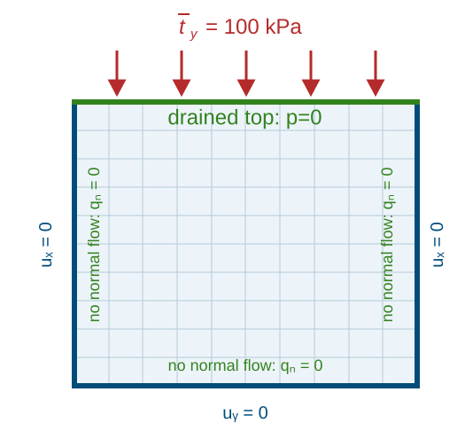

Biot consolidation of a unit square
This notebook solves a two-dimensional, transiently coupled Biot consolidation problem on the domain
The unknown fields are the displacement
and the pore pressure
[ ]:
import jax
from jax import config
import jax.numpy as jnp
from autopdex import SimState, dae, spaces
config.update("jax_enable_x64", True)
[2]:
L, H = 1.0, 1.0
vertices = [[0.0, 0.0], [L, 0.0], [L, H], [0.0, H]]
n_elements = (40, 40)
E, nu = 10.0e6, 0.30
lam = E * nu / ((1.0 + nu) * (1.0 - 2.0 * nu))
mu = E / (2.0 * (1.0 + nu))
alpha, c0 = 1.0, 1.0e-8
K = 1.0e-10 * jnp.eye(2)
t_final, num_time_steps = 1e3, 50
dt = t_final / num_time_steps
I = jnp.eye(2)
Weak form
For small strains,
The elastic strain energy density is
This yields the effective stress
and the total stress is defined as
The Darcy flux is
The implemented weak form is: find \((\boldsymbol u,p)\) such that, for all test functions \((\boldsymbol v,w)\),
and
In the code, the volume contribution of the weak form is defined in weak_form; the Neumann load is applied separately with add_weak_bc.
[3]:
def strain_energy_density(eps):
return 0.5 * lam * jnp.trace(eps) ** 2 + mu * jnp.sum(eps ** 2)
def weak_form(ctx: SimState.ModelContext):
u_fun, p_fun = ctx.trial_ansatz["displacement"], ctx.trial_ansatz["pressure"]
x, t = ctx.x_int, ctx.t
grad_u_fun = jax.jacfwd(u_fun)
grad_u = grad_u_fun(x, t)
eps_u = 0.5 * (grad_u + grad_u.T)
p = p_fun(x, t)
grad_p, p_dot = jax.jacrev(p_fun, (0, 1))(x, t)
sigma = jax.jacrev(strain_energy_density)(eps_u) - alpha * p * I
if ctx.mode == "output":
return {
"strain": eps_u,
"stress": sigma,
"darcy_flux": -K @ grad_p,
}
v_fun, w_fun = ctx.test_ansatz["displacement"], ctx.test_ansatz["pressure"]
grad_v, grad_w = jax.jacfwd(v_fun)(x), jax.jacfwd(w_fun)(x)
eps_v = 0.5 * (grad_v + grad_v.T)
w = w_fun(x)
div_u_dot = jax.jacfwd(lambda tau: jnp.trace(grad_u_fun(x, tau)))(t)
return jnp.sum(sigma * eps_v) + (c0 * p_dot + alpha * div_u_dot) * w + grad_w @ K @ grad_p
Boundary conditions
For the displacement, the strong boundary conditions are
\[u_x = 0
\quad \text{on} \quad \{x=0\}\cup\{x=L\},\]
\[u_y = 0
\quad \text{on} \quad \{y=0\}.\]
For the pore pressure, the drained boundary condition is prescribed on the top edge:
\[p = 0
\quad \text{on} \quad \{y=H\}.\]
In addition, the constant surface load
\[\begin{split}\bar{\boldsymbol t} = \begin{bmatrix}0\\-100\,\mathrm{kPa}\end{bmatrix}
\quad \text{on} \quad \{y=H\}\end{split}\]
is applied on the top edge. On the remaining pressure boundaries, the natural no-flow boundary condition follows:
\[\boldsymbol q\cdot\boldsymbol n = 0.\]
|  |
[4]:
sim = SimState({
"displacement": spaces.H1(order=2, dim=2, field_dimension=2),
"pressure": spaces.H1(order=1, dim=2, field_dimension=1),
})
sim.add_structured_mesh(n_elements, vertices, "quad")
sim.add_temporal_discretization({
"displacement": dae.BackwardEuler(),
"pressure": dae.BackwardEuler(),
})
sim.add_model("__all__", "weak form", weak_form)
sim.add_strong_bc(
"displacement",
on_boundary_fun=lambda x: jnp.logical_or(jnp.isclose(x[0], 0.0), jnp.isclose(x[0], L)),
value_fun=lambda x, t, s: 0.,
index=0,
)
sim.add_strong_bc(
"displacement",
on_boundary_fun=lambda x: jnp.isclose(x[1], 0.0),
value_fun=lambda x, t, s: 0.,
index=1,
)
sim.add_strong_bc(
"pressure",
on_boundary_fun=lambda x: jnp.isclose(x[1], H),
value_fun=lambda x, t, s: jnp.zeros((1,)),
)
sim.add_weak_bc(
"displacement",
on_boundary_fun=lambda x: jnp.isclose(x[1], H),
value_fun=lambda x, t, s: jnp.asarray([0.0, -100.0e3]),
)
[ ]:
sim.set_postprocessing_policy(
dae.SaveEquidistantPolicy(10),
result_folder_name="biot_consolidation.res",
)
sim.initialize(1)
sim.prepare()
[ ]:
result = sim.run(dt0=dt, time_span=t_final, num_time_steps=num_time_steps)
Linear solver: Pardiso(lu).
Iteration 1, Residual norm: 3.2790375156968575e-12
Iteration 1, Residual norm: 1.9836404764119437e-12
Progress: 4%, Time: 4.00e+01, dt: 2.00e+01, iterations: 1
Iteration 1, Residual norm: 2.2959053785144467e-12
Iteration 1, Residual norm: 2.5441995544474102e-12
Iteration 1, Residual norm: 2.829674488451506e-12
Progress: 10%, Time: 1.00e+02, dt: 2.00e+01, iterations: 1
Iteration 1, Residual norm: 2.9656626858298675e-12
Iteration 1, Residual norm: 3.176456184379287e-12
Iteration 1, Residual norm: 3.492888465056613e-12
Progress: 16%, Time: 1.60e+02, dt: 2.00e+01, iterations: 1
Iteration 1, Residual norm: 3.670292449868166e-12
Iteration 1, Residual norm: 4.075062920096286e-12
Iteration 1, Residual norm: 4.115568466999836e-12
Progress: 22%, Time: 2.20e+02, dt: 2.00e+01, iterations: 1
Iteration 1, Residual norm: 4.589469059177754e-12
Iteration 1, Residual norm: 4.644667220129573e-12
Iteration 1, Residual norm: 4.9968218070280015e-12
Progress: 28%, Time: 2.80e+02, dt: 2.00e+01, iterations: 1
Iteration 1, Residual norm: 5.077056270718986e-12
Iteration 1, Residual norm: 5.316347915842003e-12
Iteration 1, Residual norm: 5.547253420914281e-12
Progress: 34%, Time: 3.40e+02, dt: 2.00e+01, iterations: 1
Iteration 1, Residual norm: 5.423037031358344e-12
Iteration 1, Residual norm: 5.823917712365811e-12
Iteration 1, Residual norm: 5.7528715761207065e-12
Progress: 40%, Time: 4.00e+02, dt: 2.00e+01, iterations: 1
Iteration 1, Residual norm: 6.023095097831466e-12
Iteration 1, Residual norm: 5.9927821056149e-12
Iteration 1, Residual norm: 6.154334070851477e-12
Progress: 46%, Time: 4.60e+02, dt: 2.00e+01, iterations: 1
Iteration 1, Residual norm: 6.277960051993772e-12
Iteration 1, Residual norm: 6.431490255512737e-12
Iteration 1, Residual norm: 6.313990138189055e-12
Progress: 52%, Time: 5.20e+02, dt: 2.00e+01, iterations: 1
Iteration 1, Residual norm: 6.658213769668549e-12
Iteration 1, Residual norm: 6.544620443312482e-12
Iteration 1, Residual norm: 6.663250984377011e-12
Progress: 58%, Time: 5.80e+02, dt: 2.00e+01, iterations: 1
Iteration 1, Residual norm: 6.713593095742903e-12
Iteration 1, Residual norm: 6.732604769309924e-12
Iteration 1, Residual norm: 7.082184835160839e-12
Progress: 64%, Time: 6.40e+02, dt: 2.00e+01, iterations: 1
Iteration 1, Residual norm: 6.865662837806739e-12
Iteration 1, Residual norm: 6.9235606646801036e-12
Iteration 1, Residual norm: 7.056557936115775e-12
Progress: 70%, Time: 7.00e+02, dt: 2.00e+01, iterations: 1
Iteration 1, Residual norm: 7.3902636129989e-12
Iteration 1, Residual norm: 6.817951550169385e-12
Iteration 1, Residual norm: 7.104677637712309e-12
Progress: 76%, Time: 7.60e+02, dt: 2.00e+01, iterations: 1
Iteration 1, Residual norm: 6.968532368375137e-12
Iteration 1, Residual norm: 6.878509483904647e-12
Iteration 1, Residual norm: 7.347751728090568e-12
Progress: 82%, Time: 8.20e+02, dt: 2.00e+01, iterations: 1
Iteration 1, Residual norm: 6.950617686459621e-12
Iteration 1, Residual norm: 7.027832148638473e-12
Iteration 1, Residual norm: 7.16155260094624e-12
Progress: 88%, Time: 8.80e+02, dt: 2.00e+01, iterations: 1
Iteration 1, Residual norm: 7.2270645430592865e-12
Iteration 1, Residual norm: 7.091907135515016e-12
Iteration 1, Residual norm: 7.349415712670411e-12
Progress: 94%, Time: 9.40e+02, dt: 2.00e+01, iterations: 1
Iteration 1, Residual norm: 7.163902339255199e-12
Iteration 1, Residual norm: 7.306968593325423e-12
Iteration 1, Residual norm: 7.300486297288317e-12
Progress: 100%, Time: 1.00e+03, dt: 2.00e+01, iterations: 1